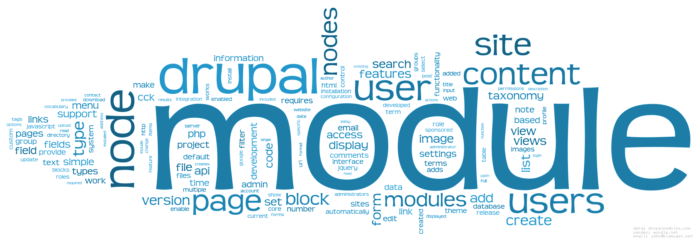

Ronald Nina Calla

Software Engineer & IT Media Trainer at DW AKADEMIE
TWT: @draven3166Gmail: draven3166
Hotmail & Skype: draven3166
Drupal Lab PC + Dev + 20 minutos
Conceptos en Drupal
Nodo (Contenido)
Un nodo es una pieza de contenido en su sitio web. El tipo de contenido del nodo va a definir qué campos se incluye con él. Dependiendo del tipo de nodo, diferentes campos serán unidos, y esto se conoce como un tipo de contenido. Por ejemplo, una base página Tipo de contenido se adjunta campos tales como campos de título y cuerpo. Otros ejemplos de tipo de contenido son: las páginas de libros para su uso en los libros, temas de discusión en foros, páginas de blog en blogs y artículos de noticias .
Entidades
Un tipo de entidad es una abstracción útil para un grupo campos juntos. Los tipos de entidad se utilizan para almacenar y mostrar los datos, que pueden ser nodos, contenido, comentarios, términos de la taxonomía, perfiles de usuario o algo desarrollados a medida.
Comentarios
Comentarios son otro tipo de contenido que puede tener en su sitio (si se ha habilitado el módulo de núcleo comentario). Cada comentario es típicamente una pequeña pieza de contenido que un usuario envía, unido a un nodo en particular. Por ejemplo, cada pieza de discusión unido a un nodo de tema foro en particular es un comentario.
Taxonomía
Drupal tiene un sistema de clasificación de contenido conocido como taxonomía . Esta es proporcionada por el módulo principal Taxonomía. Puede definir sus propios vocabularios (grupos de términos de la taxonomía) y añadir términos a cada vocabulario. Cada vocabulario puede ser unido a uno o más tipos de contenido, y de esta manera, los nodos en su sitio se pueden agrupar en categorías, etiquetado, clasificado o de cualquier manera que usted elija.
Usuario
Un usuario es un tipo de entidad que representa a un usuario del sitio web en el mundo real. De forma predeterminada, un usuario tiene un conjunto de propiedades, incluyendo su nombre de usuario, contraseña, la función y dirección de correo electrónico, El Rol al que pertenece (con ello agrupamos usuarios con distintas funciones). Sin embargo, también pueden tener otras propiedades proporcionadas por otros módulos, y se puede ampliar con nuevos campos. Por ejemplo, se podría añadir un nuevo campo "Enlace" para la dirección de Twitter de un usuario.
Módulo
Core módulos son los incluidos en la descarga principal de Drupal.
- Core: módulos son descargados desde la sección de descarga de módulos de drupal.
- Contribuido: módulos son descargados desde la sección de descarga de módulos de drupal.org, e instalados dentro de su instalación de Drupal. Los ejemplos incluyen Paneles, Vistas o Metatag .
- Personalizados: son módulos que escriba usted mismo. Esto requiere un conocimiento profundo de Drupal, programación PHP, y la API de Drupal.
Gracias a la modularidad en drupal

Flexibilidad
Gracias a los módulos de drupal: Panels, Views y CTools, la creación de nuevas funciones para el cliente se realiza a golpe de ratón, sin la necesidad de tocar el código. Como por ejemplo:
- Crear tipos de contenidos
- Crear paginas personalizadas
- Crear paginas administrativas
- Crear vistas personalizadas (consultas a BD)
- Generar feeds
- etc...
Parémos mucha teoria
vamos a la práctica...